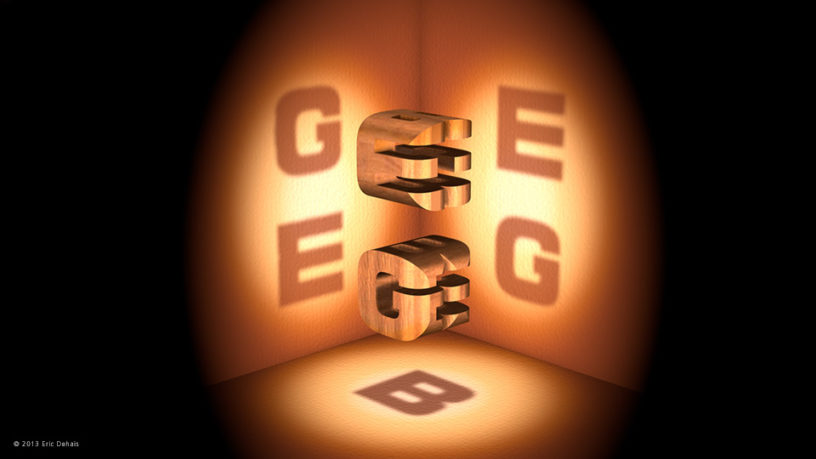
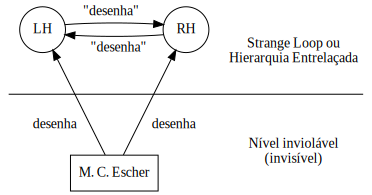

Gödel, Strange Loops e suas Implicações em Teoria Enativa e Sistemas Complexos
Lucas Samuel Vieira
Co-autor: Leonardo Lana de Carvalho
Universidade Federal dos Vales do Jequitinhonha e Mucuri
Setembro de 2019
Gödel, Escher, Bach

Figura 1: Alegoria na capa de Gödel, Escher, Bach.
- Obra publicada em 1979 por Douglas R. Hofstadter
Objetivos e Metodologia
Este trabalho é uma análise conceitual que aproxima o conceito de Hierarquia Entrelaçada (HE) de Hofstadter do pensamento enativo e do conceito de autopoiese.
Objetivos específicos
- Apresentar o conceito de HE;
- Apresentar o conceito de Sistema Complexo Autopoiético (SCA) entendendo-o como uma HE;
- Apresentar condições a serem satisfeitas para caracterizar um SCA como uma HE.
Este trabalho pauta-se na Teoria da Computação, sob a perspectiva da Teoria Enativa da Computação (TEC).
Strange Loops ou Hierarquias Entrelaçadas
Representação simbólica com características de autorreplicação e auto-referência, que está ligada a um nível inviolável que a sustenta.
Hofstadter introduz alegorias que exemplificam Hieraquias Entrelaçadas (HEs), nas obras de Mauritz Cornelius Escher e Johann Sebastian Bach.
M. C. Escher
Figura 2: Detalhe de Relativity, de M. C. Escher (litografia, 1953).
- Um todo unificado, completo e portanto inconsistente.

Figura 3: Drawing Hands, de M. C. Escher (litografia, 1948).

Figura 4: Diagrama abstrato de Drawing Hands, de M. C. Escher.
J. S. Bach
As músicas de Bach possuíam características autorreferenciais.
Este aspecto está bem explícito na obra The Musical Offering (Das Musikalisches Opfer, BWV 1079).
- Canon a 2 per Tonos
- Canon a 2 cancrizans
Kurt Gödel
Hofstadter identifica um exemplo quintessencial de HE nas provas de Gödel.
As provas de Gödel buscavam uma solução para o Segundo Problema de David Hilbert: provar que os axiomas da aritmética são consistentes.
Para tanto, Gödel precisava de uma forma de referenciar proposições da lógica, dentro da própria lógica.
Como exemplo, suponhamos um sistema lógico formal austero, equivalente ao sistema formal utilizado na obra Principia Mathematica, de Whitehead e Russell.
O sistema só é capaz de falar a respeito de propriedades numéricas. Portanto, realizaremos um mapeamento das proposições para o conjunto do números naturais \((\mathbb{N})\).
Gödel demonstrou que este mapeamento equivale ao que coloquialmente compreendemos como paráfrase ou citação.
Um número natural \(n\) poderá ser escrito como uma sucessão de \(n\) símbolos \(S\), catenados a um símbolo \(0\). Exemplo:
Falar de uma proposição \(\equiv\) provar uma propriedade numérica.
Axiomas para um sistema lógico formal (baseado em Hofstadter):
| Núm | Símb. | Núm | Símb. | Núm | Símb. |
|---|---|---|---|---|---|
| 1 | \(\lnot\) | 7 | \(0\) | 13 | \(\times\) |
| 2 | \(\forall\) | 8 | \(S\) | 14 | \(a\) |
| 3 | \(\supset\) | 9 | \((\) | 15 | \('\) |
| 4 | \(\exists\) | 10 | \()\) | 16 | \(:\) |
| 5 | \(\forall\) | 11 | , | ||
| 6 | \(=\) | 12 | \(+\) |
Mapearemos o segundo axioma (poderia ser qualquer proposição).
\(\forall a:(a+0)=a\)
Tomando os \(n\) números equivalentes aos símbolos:
\((5, 14, 16, 9, 14, 12, 7, 10, 6, 14)\)
Tomando os \(n\) primeiros números primos:
Pareamos cada primo \(p\) com cada número \(m\) gerando \(p^{m}\), e realizamos um somatório dos valores:
Este será chamado número gödeliano do segundo axioma, e poderá então ser reescrito no sistema formal, utilizando a notação austera \((SSSSS...S0)\).
HE Quintessencial
Seja \(T\) uma proposição que informa se uma proposição pertence ao sistema lógico-matemático, ou seja, se ela é um teorema.
\(T\) recebe como entrada o número gödeliano \(G(a)\), de uma proposição \(a\).
Se \(T\) é uma proposição, então \(\exists\,G(T)\).
Sendo assim, o que nos diria \(T(G(T))\)? Ou seja, \(T\) é uma proposição derivável em \(n\) passos no sistema lógico-matemático?
Kurt Gödel descobriu que não.
Sendo assim, o sistema lógico-matemático é incompleto, porque há teoremas que não podem ser derivados no mesmo.
Para que \(T\) seja derivável, o sistema deve suportar antinomias – o que exige autorreferência.
Hofstadter vê isto como uma oportunidade para transcender os limites do computável.
Sistemas autopoiéticos
Uma HE depende de um nível constituinte inviolável para a mesma.
O nível inviolável é percebido como um sistema formal, consistente e incompleto.
Este nível dá origem e/ou acesso a uma porção identificável como um sistema informal, que é a própria HE.
A possibilidade de uma HE abrigar uma antinomia dá a ela um potencial de completude.
Uma HE pode ser compreendida como produto emergente do seu nível estruturante, sendo portanto um contexto emergente.
A HE, então, pode ser vista como um componente à deriva em um sistema complexo autopoiético (SCA).
Defendemos que SCAs podem ser compreendidos como sistemas com consistência e completude em seus subsistemas à deriva, capazes de envolver contradições \((P \land \lnot P)\).
Três critérios são essenciais para a viabilidade desta ideia:
- A possibilidade de surgimento de SCAs depende de processos consistentes ao nível dos elementos estruturantes do mesmo.
- A autonomia dos processos leva o sistema a bifurcações, e até mesmo a contradições.
- O SCA torna-se possível graças à auto-organização, a qual envolve suas ações paradoxais em um sistema aberto e unificado à deriva no ambiente.
Estes subsistemas são macroscopicamente visíveis como entidades independentes que se comunicam, mas compartilhariam um mesmo nível inferior, demonstrando indissociabilidade.
Considerações Finais
- Partimos das HEs de Hofstadter;
- Compreendemos as HEs sob a perspectiva do enativismo, como produto de comportamento emergente;
- Equiparamos HEs a um sistema informal em contato com um nível constituinte formal;
- Defendemos que este modelo possui potencial de completude e poderia caracterizar SCAs.
Como perspectivas, buscamos vias formais para modelar e sintetizar este encapsulamento de um aglomerado de sistemas formais e informais que têm, por definição, a capacidade de interagir mutuamente em suas computações.
Visamos uma representação formal adequada a longo prazo, enquanto modelo computacional efetivo de SCAs.
Agradecimentos
Referências
HOFSTADTER, D. R. Gödel, Escher, Bach: An eternal golden braid. New York: Basic Books, 1979. ISBN 978-0-465-02656-2.
NAGEL, E.; NEWMAN, J. R. Gödel's proof (revised edition). New York: New York University Press, 2001. ISBN 0-8147-5816-9.
CARVALHO, L. L.; PEREIRA, D. J; COELHO, S. A. Origins and evolution of enactive cognitive science: Toward an enactive cognitive architecture. Science Direct, volume 16, pp. 169–17. DOI: 10.1016/j.bica.2015.09.010.
VARELA, F. J.; THOMPSON, E.; ROSCH, E. The embodied mind: Cognitive Science and Human Experience. Cambridge: MIT Press, 1991. ISBN: 978-0262529365.